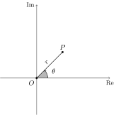

Présentation
\section{Forme polaire}
Bien que la plupart du temps le système de coordonnées cartésiennes soit le plus commode pour décrire la position des points dans le plan, il arrive qu'une autre manière, où la notion d'angle est exploitée, soit à privilégier. On parler alors d'une représentation polaire, ou trigonométrique du point dans le plan. En coordonnées polaires, deux nombres réels sont nécessaires pour identifier la position d’un point \(P\) à partir d’un point \(O\) dans un plan. Le nombre \(r\) correspond à son module, et \(\theta\) à son argument.
Définition 1 Soit \(z\in\mathbb{C}^{\star}\), un nombre complexe de module \(r\). L’argument principal de \(z\), noté \(\textrm{Arg}\,(z)\), est l’unique nombre \(\theta\) qui satisfait les deux conditions suivantes: \[\begin{align*} z=&\, r(\cos\theta+\textrm{i}\sin\theta),\\ -\pi<\,& \theta\leq \pi. \end{align*}\]
Définition 2 Soit \(z\in\mathbb{C}^{\star}\), un nombre complexe de module \(r\) et d’argument principal \(\theta\). Le nombre \(z\) est exprimé sous sa forme polaire lorsqu’on écrit [z=, r(+).]
La forme polaire du nombre \(2+2\textrm{i}\). Nous avons que \(2+2\textrm{i}=2\sqrt{2}\left(\cos\frac{\pi}{4}+\textrm{i}\sin\frac{\pi}{4}\right)\).
\begin{rem}~
\begin{enumerate}
\item L'argument principal de 0 n'est pas défini;
\item On écrit $\arg(z)$ pour désigner un angle $\theta$, pas nécessairement dans l'intervalle $\interval[open left]{-\pi}{\pi}$, qui satisfait $z=r(\cos\theta+\iu\sin\theta)$;
\item Pour avoir la forme polaire d'un nombre $z$, il est important que $\theta$ soit l'argument principal de $z$;
\item Parfois on retrouve la notation $r\,\textrm{cis}\,\theta$ à la place de $r(\cos\theta+\iu\sin\theta)$.
\end{enumerate}
\end{rem}Le nombre \(0\) n’a pas de forme polaire, puisque son argument principal n’est pas défini. On peut cependant le caractériser comme étant l’unique nombre ayant un module de \(0\).
\begin{prop}
Soit $z\in\Cs$ un nombre complexe de forme cartésienne $x+\iu y$. Son argument principal, noté $\theta$, est donné par la formule
$$
\theta =
\begin{cases}
\arctan(\frac{y}{x})&{\mbox{si }}x>0,\\
\frac{\pi}{2}&{\mbox{si }}x=0{\mbox{ et }}y>0,\\
\arctan(\frac {y}{x})+\pi &{\mbox{si }}x<0{\mbox{ et }}y\geq 0,\\
\arctan(\frac {y}{x})-\pi &{\mbox{si }}x<0{\mbox{ et }}y<0,\\
x=0{\mbox{ et }}y<0.&{\mbox{si }}x=0{\mbox{ et }}y<0.
\end{cases}
$$
\end{prop}La démonstration de la proposition précédente ne pose aucune difficulté si on prend la peine de représenter convenablement un nombre complexe \(z\) dans chacun des cinq scénarios énumérés.
Pour qu’on puisse dire que \(r(\cos\theta+\textrm{i}\sin\theta)\) correspond à la forme polaire d’un nombre complexe, il est important que \(\theta\) soit l’argument principal de \(z\), c’est-à-dire qu’il appartient à l’intervalle \(]-\pi,\,\pi].\)
La fonction exponentielle complexe
Dès la fin du secondaire, la fonction exponentielle est présentée comme une fonction incontournable en mathématique. Elle apparaît dans plusieurs contextes, et vérifie des propriétés remarquables. On la présente comme l’unique fonction égale à sa dérivée en tout point de son domaine, qui prend la valeur \(1\) en \(0\). Si on décide de la noter par \(\exp(x)\), elle vérifie notamment les propriétés suivantes:
- \(\exp(x)\) est définie pour tout \(x\in\mathbb{R}\);
- \(\exp(x+y)=\exp(x)\cdot\exp(y)\) pour tout \(x,y\in\mathbb{R}\);
- \(\exp(x)^y=\exp(xy)\) pour tout \(x,y\in\mathbb{R}\);
- \(\exp(0)=1\).
L’analogie entre ces propriétés et celles de la manière d’écrire certaines opérations de l’arithmétique élémentaire suggère de noter la fonction exponentielle \(\eu^x\). Les propriétés énoncées plus haut se traduisent alors par:
- \(\eu^x\) est définie pour tout \(x\in\mathbb{R}\);
- \(\eu^{x+y}=\eu^{x}\cdot\eu^{y}\) pour tout \(x,y\in\mathbb{R}\);
- \(\left(\eu^{x}\right)^y=\eu^{xy}\) pour tout \(x,y\in\mathbb{R}\);
- \(\eu^0=1\).
Il est aussi possible de définir la fonction exponentielle par le biais d’une série. Rappelons d’abord quelques faits concernant ce sujet.
Au niveau collégial, une partie du cours de calcul intégral est consacrée à l’étude des séries de nombres réels. On y apprend entre autres qu’en augmentant la valeur de \(n\) dans l’expression \[1+\frac{1}{2}+\frac{1}{3}+\ldots \frac{1}{n},\] on peut obtenir un nombre aussi grand qu’on le désire. En utilisant la notation sigma, cela se traduit par l’affirmation que \[\sum_{k=1}^{\infty}\frac{1}{k}=\infty.\] Il est aussi démontré qu’en augmentant la valeur de \(n\) dans l’expression \[1+\frac{1}{2^1}+\frac{1}{2^2}+\ldots \frac{1}{2^n},\] on peut obtenir un nombre aussi près qu’on le souhaite du nombre \(2\). Cela se traduit par l’égalité \[\sum_{k=0}^{\infty}\left(\frac{1}{2}\right)^k=2.\] Dans le premier exemple, la série diverge,(vers l’infini), dans le second cas elle converge vers le nombre \(2\). Si nous remplaçons le \(\frac{1}{2}\) par \(3\) dans la dernière série, on se retrouve alors à additionner les puissances de \(3\): \(\sum_{k=0}^{\infty} 3^k=\infty.\) C’est donc dire que la série \(\sum_{k=0}^{\infty}x^k\) converge pour certaines valeurs de \(x\), et diverge pour d’autres. Cette constatation nous pousse à étudier ce que nous convenons d’appeler les . La question fondamentale est alors la suivante : étant donnée une suite de nombres réels \((a_0,a_1,\ldots)\), pour quelles valeurs de \(x\in\mathbb{R}\) la série \(\sum_{k=0}^{\infty}a_kx^k\) converge-t-elle? À l’aide de certains critères de convergence, on peut montrer que la série \(\sum_{k=0}^{\infty} x^k\) converge pour toutes les valeurs de \(x\) dans l’intervalle \(\interval[open]{-1}{1}\), et diverge à l’extérieur de ce même intervalle. Il est aussi possible qu’une série de puissances ne converge que pour \(x=0\). C’est le cas de la série \(\sum_{k=0}^{\infty}k!x^k\). En revanche, il est aussi possible qu’une série converge quelle que soit la valeur de \(x\). C’est précisément ce qui se produit pour la série de puissances \(\sum_{k=0}^{\infty}\frac{1}{k!}x^k\).\ En analyse complexe, on peut considérer la situation analogue suivante : étant donnée une suite de nombres complexes \((a_0,a_1,\ldots)\), pour quelles valeurs de \(z\in\mathbb{C}\) la série de puissances (aussi appelée série entière) \(\sum_{k=0}^{\infty}a_kz^k\) converge-t-elle? Encore une fois, il est possible de montrer que la série \(\sum_{k=0}^{\infty}\frac{1}{k!}z^k\) converge pour tout \(z\in\mathbb{C}\). Cette démonstration est basée sur le critère de d’Alembert. Cette série entière est fondamentale en mathématiques : c’est la fonction exponentielle.
Définition 3 La fonction exponentielle est définie pour tout \(z\in\mathbb{C}\) en posant \[\eu^z=\sum_{k=0}^{\infty}\frac{z^k}{k!}.\]
Supposons maintenant que \(z\) soit un nombre complexe de module \(r\) et d’argument principal \(x\). En multipliant chaque membre de l’équation \(\eu^{\textrm{i}x}=\cos x+\textrm{i}\sin x\) par \(r\), on en déduit que \(z\) est aussi égal à \(r\eu^{\textrm{i}x}\).
Définition 4 Soit \(z\) un nombre complexe non nul de module \(r\) et d’argument principal \(\theta\). La forme exponentielle de \(z\) est donnée par \[z=r\eu^{\textrm{i}\theta}.\]
##Les formules d’Euler et celle de De Moivre
Tenons-nous-le pour dit : Euler a démontré une pléiade de formules durant sa vie. Dans cette section, nous faisons allusion à certaines formules qu’il a établi entre la fonction exponentielle et les fonctions trigonométriques. Ces dernières apparaissent dans son ouvrage , publié en 1748.
Nous avons étudié un peu plus tôt la fonction racine carrée, qui à un nombre positif \(a\) lui associe un nombre positif, noté \(\sqrt{a}\), dont le carré est \(a\). Il arrive souvent qu’on fasse allusion racines carrées d’un nombre \(x\), aussi appelées racines deuxièmes. Dans ce cas, il est important de comprendre qu’on considère alors toutes les solutions de l’équation \(x^2=a\). Outre le nombre \(0\) qui ne possède qu’une racine carrée,(à savoir \(0\)), la proposition ci-dessous affirme que tout nombre complexe non nul possède exactement deux racines carrées.
y=(+).$$ \end{proof} Il est aussi possible de calculer les racines d’un nombre complexe \(w\) en remarquant que si \(r\) est une racine carrée de \(w\), alors \(|r|^2=|w|\). En effet, par définition de \(r\), \(r^2=w\). Puis, en utilisant la proposition \(\ref{prop:module}\) \(\ref{proppuissance}\), on déduit que \(|r|^2=|w|\). Illustrons ce résultat par un exemple.
Définition 5 Soit \(w\) un nombre complexe, et soit \(n\in\{2,3,4,\ldots\}\). On dit que \(z\in\mathbb{C}\) est une racine \(n\)-ième de \(w\) si \(z^n=w\).
Dans le cas particulier où \(w\) est un nombre réel positif, l’étude du graphe de la fonction \(f(x)=x^n\) nous permet de déduire que parmi les racines \(n\)-ième de \(w\), précisément une d’entre elles est un nombre réel positif. Si \(r\) est un nombre réel positif, sa racine \(n\)-ième positive est notée \(\sqrt[n]{r}\). Cette observation est cruciale pour exprimer les racines \(n\)-ièmes d’un nombre complexe arbitraire.
 Allure du graphe de la fonction \(x^n\) pour \(x\geq 0\) et \(n\in\{2,3,\ldots\}\). Étant donné un nombre réel \(r\geq 0\), il existe un unique nombre réel, noté \(\sqrt[n]{r}\), vérifiant \(\left(\sqrt[n]{r}\right)^n=r\). Cela signifie que tout nombre réel positif possède une et une seule racine \(n\)-ième appartenant aux nombres réels positifs.
Allure du graphe de la fonction \(x^n\) pour \(x\geq 0\) et \(n\in\{2,3,\ldots\}\). Étant donné un nombre réel \(r\geq 0\), il existe un unique nombre réel, noté \(\sqrt[n]{r}\), vérifiant \(\left(\sqrt[n]{r}\right)^n=r\). Cela signifie que tout nombre réel positif possède une et une seule racine \(n\)-ième appartenant aux nombres réels positifs.
Lorsqu’on parle de la racine \(n\)-ième d’un nombre \(x\), on fait allusion à l’unique nombre réel qui, élevé à la puissance \(n\), donne \(x\). Ainsi, bien qu’il existe \(4\) nombres complexes \(z\) vérifiant \(z^4=16\), il est courant de dire que \(2\) est la racine quatrième de \(16\).
} \end{proof}